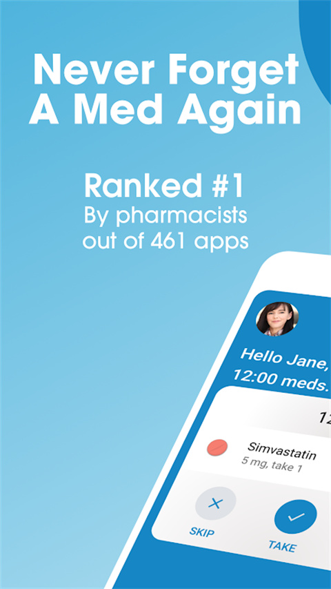
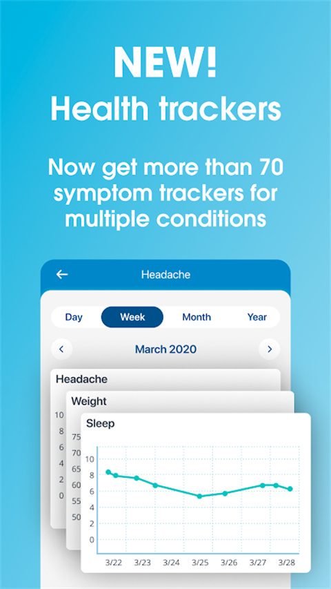

用药提醒 App 横向比了一圈，最后我定了 Medisafe
从最简单的闹钟式提醒到带相互作用检查的医疗级方案，Medisafe 在同类里靠三点把我留住了。但它也不是没有代价，哪些人用得上、哪些人反而不适合，这里说清楚。
这个类目里它排什么位置
先说结论：如果你只是每天吃一片维生素，手机自带的闹钟或日历提醒就够了——犯不上装一个医疗级的用药管理应用。但如果你同时在吃三五种以上的处方药、有慢性病需要长期追踪、或者家里有老人小孩需要一起管，那通用提醒器的天花板很快就会被撞到。
我前后试过几款同类工具。最基础的那种就是把闹钟换了个皮肤，加了个 "taken" 按钮，本质还是定时推送。往上一层的多了几个健康数据录入项，但提醒逻辑仍然是死的——到点响、响了没点就继续推，不会管你今天是不是起晚了、旅行到了另一个时区。再往上就是走医疗合规路线的，Medisafe 属于这一档。它的官网上列的功能清单覆盖面确实够广。
它不便宜，Pro 版每年要几十美元，但它的核心优势是那些免费工具做不到、也不会做的事——从官方下载拿到的免费版已经覆盖了大部分核心功能。下面拆三点说。
它跟别的提醒器到底差在哪
一、提醒不是定时闹钟，是在"学习"你
第一次用 Medisafe 最直观的感受是：它不是在"执行"你设的时间点，而是在"配合"你的习惯。
比如你每天早上 8 点吃降压药，但经常因为赶地铁迟到 10 到 15 分钟才反应过来。连续标记几次 late 之后，下一周它会在 7:45 悄悄推一条预提醒——不是响铃那种强打断，是一条可以忽略的轻提示。如果你连续几天都准点吃了，预提醒又会自动退回到正常时间窗口。
这种行为全部可以手动关掉或者改参数，不会强制让你"被 AI 摆布"。但开着它的人基本都不会关掉——因为你真的能感觉到它在适应你，而不是反过来让你适应一个死板的时间表。
时区切换也是同类产品很少做对的功能——去Medisafe文档翻了一下才弄明白它的设计逻辑。出差或者旅游时，Medisafe 检测到系统时区改变后，不会把所有药的时间点生硬换算——它保持"早上 8 点"这个绝对时间不变，只是把提醒推送改按当地时区算。这样早上 8 点的药和晚上 8 点的药仍然保持 12 小时间隔，不会因为换了个国家就乱成一团。
二、医疗合规是硬门槛，不是营销噱头
很多用户第一次看到 Medisafe 首页的 HIPAA、GDPR、ISO 27001 三个标识时会觉得"又是大厂在堆认证"——但用了之后才发现，这些认证直接对应到 App 的功能边界和数据处理方式。
Medisafe 的数据在设备端用 256 位 AES 加密存储，App Store 隐私声明里明确写了"数据不与用户身份关联"。这意味着即使服务商那边出了什么事，你的健康数据也无法被追溯到具体的你。更重要的是，你可以随时请求导出或删除全部数据——不是那种"我们会在 30 天内处理"的套话，而是在 App 设置里点一下就能生成导出文件，删除请求也有明确的回执和处理期限。
对比一下那些没拿合规认证的通用提醒器：它们根本不处理医疗级的数据，所以也不需要合规。但反过来，这也意味着它们的功能深度就停在提醒这一步——你没法把过敏史跟药物条目关联起来、没法让它检查新吃的感冒药会不会跟正在吃的降压药冲突。Medisafe 的相互作用检查器接的是 RxList 的云端数据库，覆盖了处方和非处方药、甚至包括一些常见的食物补充剂，这一块是合规认证带来的"附加值"，也是通用工具追不上的。

三、离线能用，冲突能合并
我有次坐国际航班，起飞前忘了把常用的药物条目离线预加载一遍——结果飞行中途想记录一次测量值，打开 Medisafe 才发现它在完全离线状态下几乎所有核心功能都正常：录入新条目、标记 taken/late、查看时间线和报告，全部能用。唯一不行的是加新的 Medfriend（需要云端发邀请）和跑相互作用检查（因为依赖云端数据库），但这两个本来也不需要在没网的时候做。
真正让我对它的工程质量刮目相看的是联网之后的合并策略。我有过两台设备同时离线改了同一条药物条目的情况——比如手机上改了剂量、平板上改了提醒时间——联网之后 Medisafe 用"后改覆盖前改"的时间戳策略处理，不会出现两份冲突版本让你手动选的尴尬场景。这个细节听起来简单，但很多同步工具做不好这一点，尤其是涉及医疗数据时，冲突处理不当可能导致医生看到的记录前后对不上。
它的代价是什么
说到这里你可能觉得 Medisafe 完美得不行——但它确实有明显的取舍，不是所有人都应该选它。
上手门槛更高。 第一次打开 Medisafe 要填的东西比普通提醒器多得多：过敏史、常用补充剂、是否在吃多种处方药。如果你只是每天吃一片复合维生素，这些信息完全用不上，反而会让你觉得"这个 App 太复杂了"。
平台支持不完整。 Medisafe 有 iOS、Android 和 Apple Watch，但没有官方的桌面端 Web 应用（虽然网页版功能极其有限）。对习惯在电脑上管理日程的人来说，这个体验是断档的。
Pro 版收费。 基础功能是免费的，但高级的报表导出、无限制的 Medfriend 数量、深度健康追踪这些功能都在 Pro 版后面。如果你用不到这些，免费版足够，但如果你是慢性病患者需要跟医生同步数据，Pro 的费用就绕不开。
选购结论
什么样的人选 Medisafe：
- 同时在吃 3 种以上处方药，需要相互作用检查避免踩雷
- 有明确的过敏史或禁忌，希望每次加新药时自动触发预警
- 经常出差或旅行，时区切换和离线可用性是刚需
- 家里有老人或小孩，需要把他们的用药进度也纳入同一个时间线
什么样的人选别的：
- 只有一两种固定药物，手机自带的日历提醒完全够用
- 不接受付费，且不需要相互作用检查或健康数据追踪
- 主要在桌面端操作，希望有完整的 Web 体验
最后说一句：我选 Medisafe 不是因为它功能最多、UI 最漂亮，而是因为它在"医疗数据"这个最不能出错的场景里，把合规、同步、离线这三件事一起做对了——其他提醒器要么根本不碰这个领域，要么只做了其中一件。对你自己或者家人的健康数据，这个选择理由应该够充分了。仓库那边也留了一份完整资料，GitHub、Gitee、GitCode 各存了一份，免得单个站点抽风找不到。
